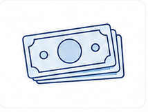
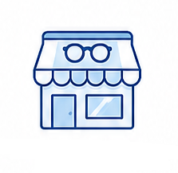
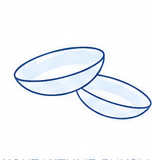
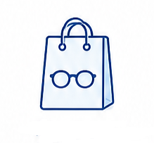

Услуги и цены

Стоимость приёма
Все приёмы проходят в оптике Ginter, Нови Сад. Запись обязательна.

Первичный приём
Полное обследование зрения, подбор очков или контактных линз, рекомендации, помощь с заказом в оптике.
60 минут3 000 дин

Повторный приём
Контроль зрения, корректировка подбора, повторные рекомендации. В течение 6 месяцев после первичного.
60 минут2 000 дин

Консультация в оптике
Помощь с выбором оправы и линз, проверка готовых очков, второе мнение — без проверки зрения.
30 минут1 000 дин

Проверка зрения и подбор контактных линз с обучением
Полное обследование, подбор контактных линз с примеркой, обучение надеванию и уходу.
90–120 минут3 500 дин

Помощь при оформлении заказа
Помогу выбрать оправу и линзы под ваш бюджет, оформить заказ в оптике.
Бесплатно
Оплата
Оплата за консультацию — наличными. Заказанные очки и линзы можно картой или наличными.
Оплата за очки и контактные линзы возможна при получении заказа.
Запись обязательна